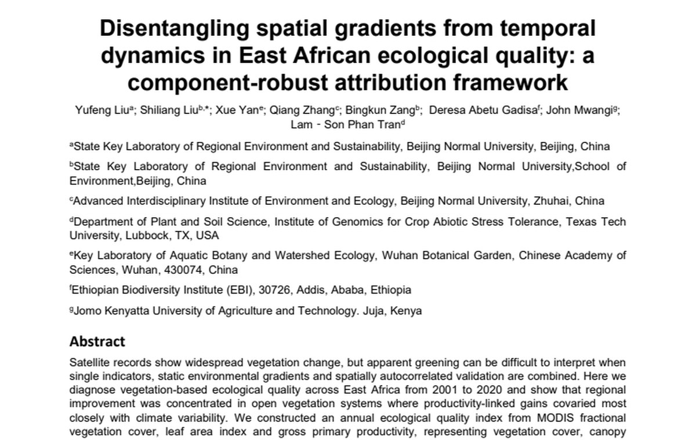
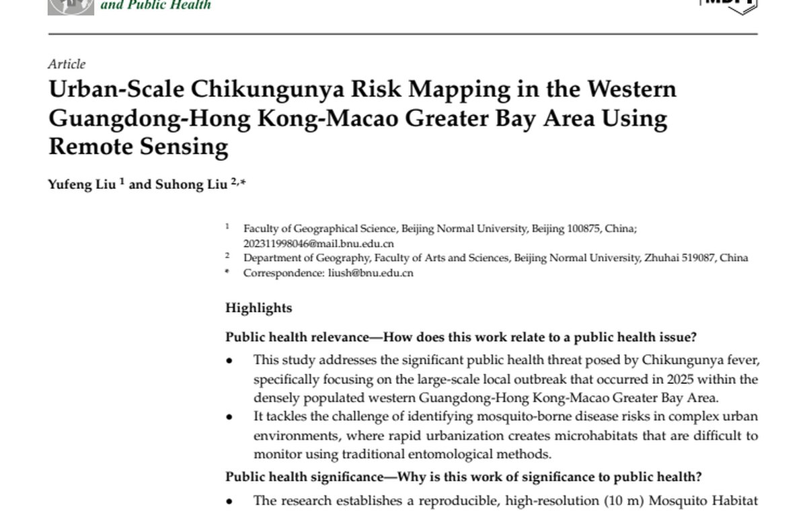
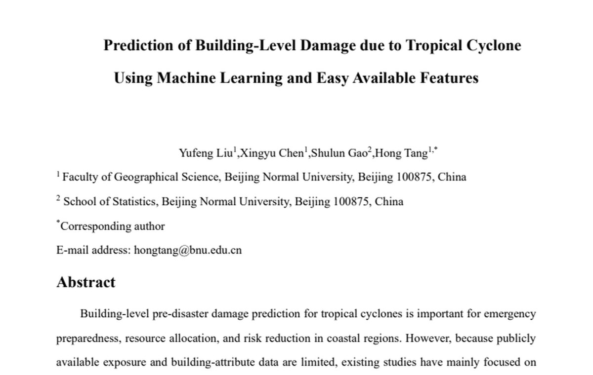
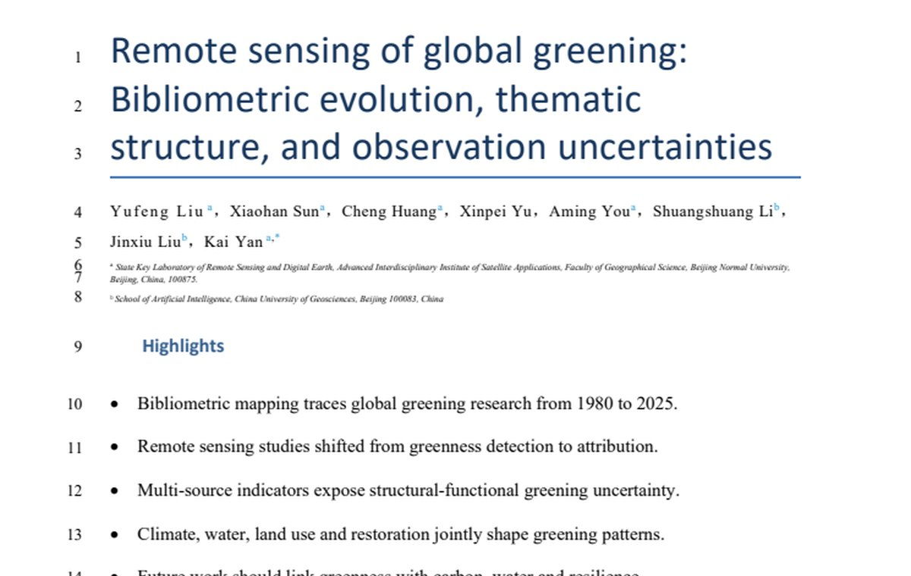
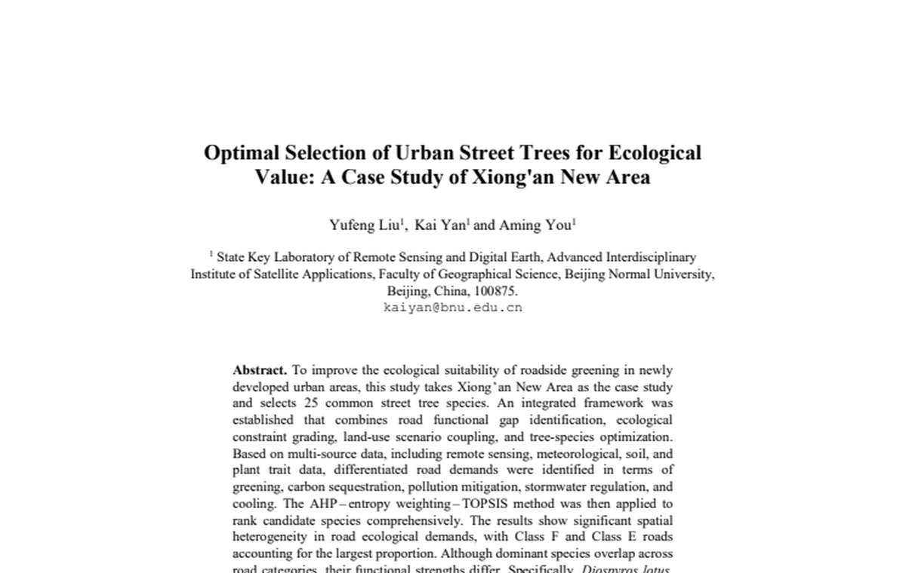
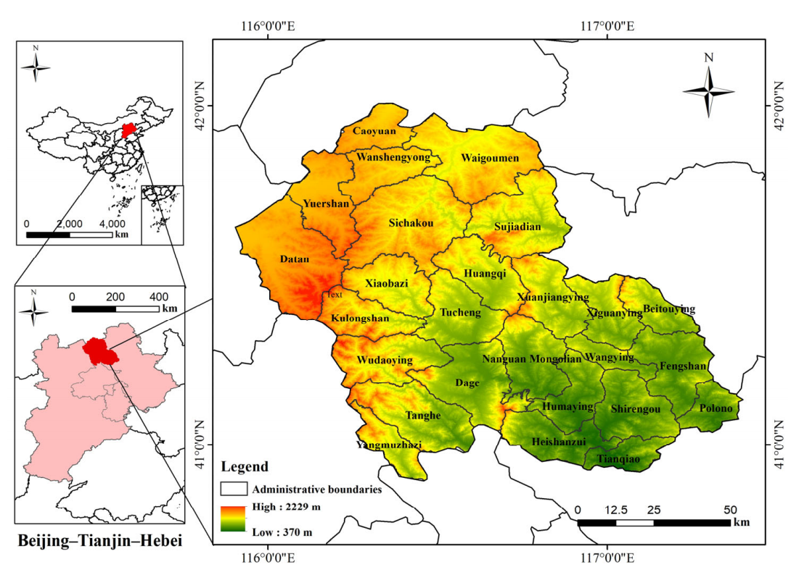

01
Component-robust attribution
East Africa Ecological Quality
A multi-component ecological-quality framework separating spatial gradients, long-term trends, and annual anomalies.
Yufeng Liu | Geospatial AI Research
I turn imperfect Earth-observation records, public datasets, and field-linked evidence into interpretable workflows for ecology, public health, disaster risk, and urban sustainability.
Projects

Component-robust attribution
A multi-component ecological-quality framework separating spatial gradients, long-term trends, and annual anomalies.

Published first-author article
A 10 m remote-sensing framework connecting habitat suitability with urban outbreak heterogeneity.

Machine-learning disaster risk
Pre-disaster screening with simplified wind-field features, accessible building attributes, SHAP, and transferability checks.

Bibliometric synthesis
A field map of global greening research from phenomenon detection to functional uncertainty and attribution.

Urban ecological decision model
A classified tree-species decision framework combining road gaps, constraints, ecosystem services, and TOPSIS.

Computer vision pipeline
YOLOv8-seg and YOLOv11 work with ISPRS benchmark conversion, augmentation, tuning, and crown-boundary post-processing.

Published co-authored article
Published work on spatio-temporal vegetation dynamics and driving mechanisms in an agro-pastoral transitional zone.
Across projects, my contribution is to ask what a satellite or model signal can responsibly mean, then test whether the answer holds when indicators, scale, validation strategy, and data availability change.
Publication dock
External DOI links open in a new tab.
Skills tapestry
Remote sensing, GIS, and multi-source environmental data fusion form the base layer of my research.
Course evidence
Ready-to-open files
Manuscripts and portfolio files are stored locally with this site. Published works keep their DOI routes so reviewers can jump straight to the journal page.